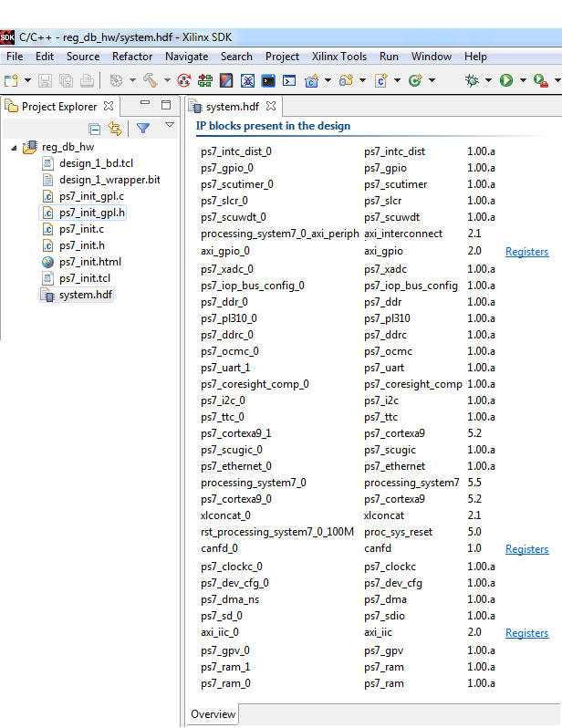
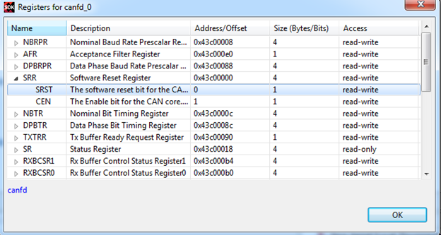

Viewing IP Register Details
Xilinx® SDK now supports viewing of IP register details, using either the Hardware (system.hdf) view or during debug using the Registers view.
Viewing IP register details using the Hardware (system.hdf) view
After a successful hardware project creation, SDK opens the system.hdf file in the Editor view. The file now displays cross-references to the registers of IP blocks present in the design.

To view register details, click on the Registers link on the system.hdf file in the Editor view.

Viewing IP register details using the Registers view
Debug a hardware project and launch the Registers view to view the registers and their field values.

You can modify editable field values, during debug. You can also pin the Registers view using the Pin to Debug Context toolbar icon, as shown in the figure below.